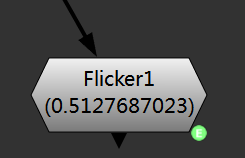
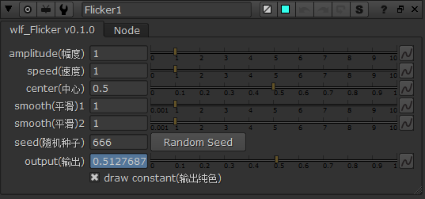
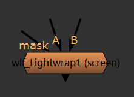
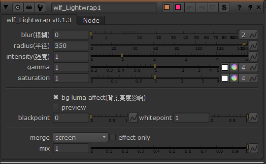

Draw¶
绘制,用于得到自定输出
Flicker¶
灯光抖动生成器
控制¶
wlf_Lightwrap¶
修改过的灯光包裹,比自带的灯光包裹效果更好
启用前¶

启用后¶
控制¶
VectorTestPattern¶
提供和输入尺寸相同的 GenerateVector 专用测试图案。
GenerateVector¶
生成向量数据，配合 VectorTestPattern 使用。
输入:
<无名称>
向量数据和此输入合并。
before
应用向量之前的测试图案，仅识别rg通道。
after
应用向量之后的测试图案，仅识别rg通道。
控制:
output
向量输出通道，默认为motion，输出4个通道，后2个通道数据和前两个通道相同。
用法示例¶
用法示例对应的效果¶
OnionSkin¶
用于创建基于动画关键帧的洋葱皮效果。
输入:
<无名称>
用于获取动画关键帧的节点。
控制:
knob_name
输入节点上用来获取动画关键帧的控制名称，默认为 curves 对应 RotoPaint 关键帧。
offset
关键帧偏移，-n 代表上n个关键帧，n 代表下n个关键帧。
在当前帧非关键帧时，如果n为正数则当前关键帧为左边的关键帧，n 为负数则当前关键帧为右边的关键帧。
mix
叠加显示的不透明度
effect_only
启用时，不将效果添加和输入合并而是只返回效果。
output
计算出的对应关键帧帧编号。在无对应关键帧时为当前帧编号。
可用于其他节点的表达式中。